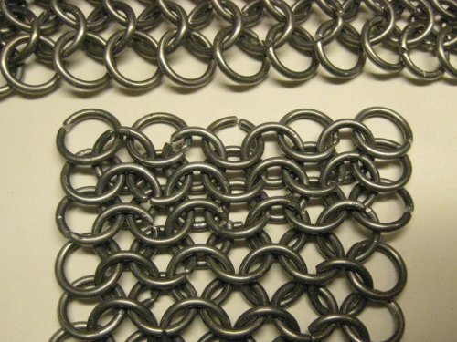
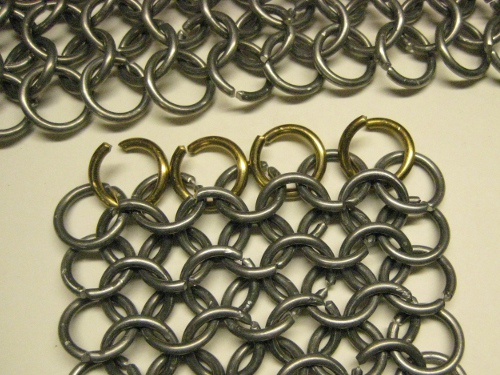
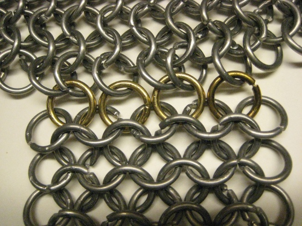
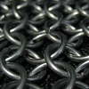

90 Degree Seam
This seam can be constructed in a number of ways for a variety of purposes. It can be used to to attach
sleeves to the body of the mail, or if you choose to have the sleeves be a continuation of the shoulders,
then you will need this on the armpits.
Start with two completed pieces of mail, aligned like shown.

Prepare open rings for the lower piece. Notice that each ring will connect with two others,
and acts just as though the normal pattern is going to continue.

Alternate connecting your new open rings to 2, then to 1 ring of the opposite piece. This will maintain a
relaxed and comfortable position for both pieces while they are at rest and while they are under tension.

Notes:
-While I used brass rings for the visibility in this demonstration, you will typically want to use the same metal as the rest
of the armor. Keep in mind that this point in the armor is a point of failure due to the nature of the
seam. Pay close attention to it for repairs, or substitute stainless steel reinforcement rings in aluminum
mail.

Introduction to Chainmail